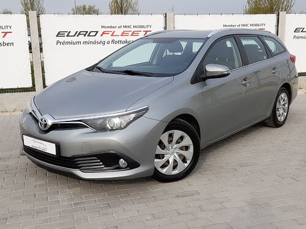
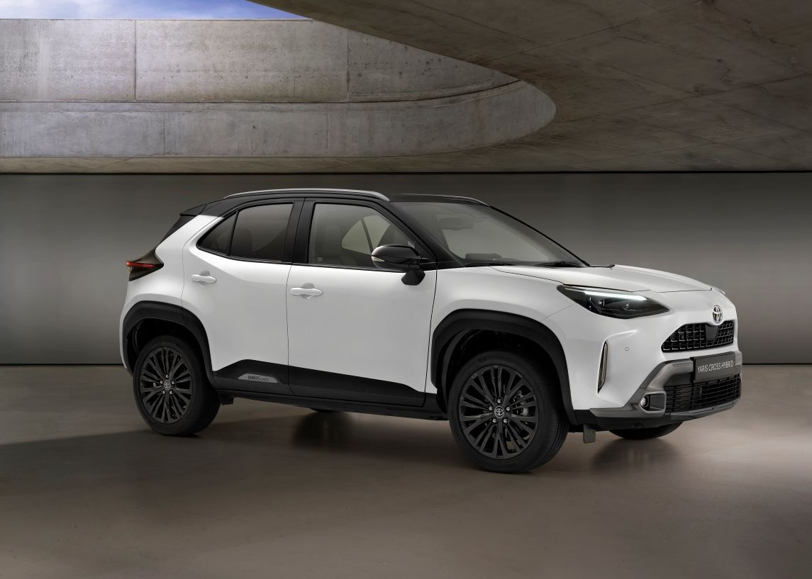

|

Toyota Auris (hybrid)
Állapot: Felújítást igényel
Típus: Családi/Városi Évjárat: 2018 Okmányok: Magyar okmányok Műszaki adatok: Tovább a weboldalra Vételár: 3,500,000 Ft |

Toyota Yaris Cross (hybrid)
Állapot: Kitűnő (Gyári)
Típus: Városi terepjáró Évjárat: 2022 Okmányok: okmányok nélkül Műszaki adatok: Letölthető PDF file Vételár: 9,100,000 Ft |